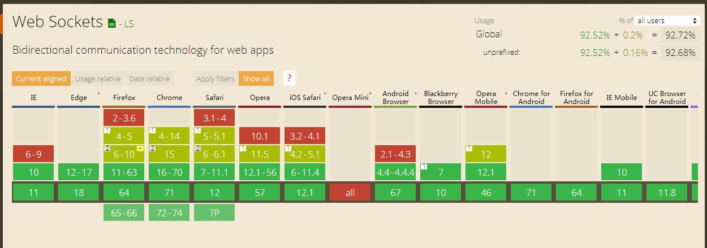

易问web版浏览器支持方案分析
背景
易问.net向web迁移过程，需要考虑浏览器支持性的问题。支持不同的浏览器技术架构和实现方案也有所不同
现状
易问.net版有一部分用户仍然使用的是windows xp系统，而xp系统，IE浏览器最高只能支持到IE8。
| 省份 | 总用户 | xp用户 |
|---|---|---|
| 福建省 | 24957 | 1270 |
| 广西壮族自治区 | 33389 | 1116 |
| 江西省 | 25330 | 308 |
| 陕西省 | 21060 | 291 |
| 山东省 | 14466 | 242 |
| 山西省 | 9549 | 214 |
| 贵州省 | 4810 | 192 |
| 重庆电信 | 15117 | 191 |
| 云南省 | 15348 | 103 |
| 黑龙江电信 | 5939 | 98 |
| 吉林省 | 6458 | 94 |
| 内蒙古自治区 | 7952 | 87 |
| 辽宁省 | 6593 | 79 |
| 海南省 | 8553 | 78 |
| 河北省 | 24747 | 77 |
| 宁夏回族自治区 | 3459 | 77 |
| 甘肃省 | 6505 | 52 |
| 湖北省 | 6379 | 41 |
| 天津市 | 3552 | 41 |
| 青海省 | 4506 | 21 |
| 西藏自治区 | 3769 | 17 |
| 易问集团支撑项目组 | 170 | 10 |
| 四川省 | 714 | 7 |
| 北京市 | 2943 | 5 |
| 号百信息服务有限公司 | 80 | 0 |
| 河南省 | 2 | 0 |
| 翼支付 | 12 | 0 |
| 云公司 | 170 | 0 |
* 以上数据由@xucf(徐超凡)统计，感谢
如果要照顾这部分用户的使用，易问web版需要兼容IE8浏览器。
设计和实现上的限制
IE8的发行时间是2008年，到现在已经有10年以上了，很多新技术，新规范IE8都无法支持。
即时沟通模块
websocket是HTML5新加入的，一种在单个TCP上进行全双工通信协议，非常适合web端的即时通讯场景。
不能采用WEBSOCKET协议的原因有两个： 1. 消息服务由NBC提供，根据反馈目前暂时无法支持websocket协议。（需要升级） 2. 兼容性问题，websocket协议需要IE10以上的浏览器才能支持。
** websocket兼容性 ** : 
NBC目前提供的消息接口是基于BOSH协议实现 ** BOSH （Bidirectional-streams Over Synchronous HTTP） ** ： 一种传输协议。它可以利用同步的HTTP协议模拟两个实体（例如客户端-服务端）双向流传输，而不需要轮询或异步组件。
** 性能对比 ** 假设服务端每秒推送50条消息给前端用户，每条消息的长度为10byte，那么，对应不同的用户规模，客户端与服务端通信所传输的字节数如下：
假设同时在线人数为100人，采用comet长轮询方案服务端与客户端需要传输总的字节数=(50*(10+686))*100=3480kb，而采用websocket方式的话，服务端与客户端总共需要传输的字节数=(50*10+702)*100=75.2kb;
假设同时在线人数为1000人，采用comet长轮询方案服务端与客户端需要传输总的字节数=(50(10+686)) 1000=34800kb，而采用websocket方式的话，服务端与客户端总共需要传输的字节数=(50*10+702)*1000=752kb;
假设同时在线人数为1w人，采用comet长轮询方案服务端与客户端需要传输总的字节数=(50*(10+686))*1w=348000kb，而采用websocket方式的话，服务端与客户端总共需要传输的字节数=(50*10+702)*1w=7520kb;
参考资料来源：https://blog.csdn.net/liangxw1/article/details/50810440
跨域解决方案
消息服务接口是独立域名，目前是通过CORS方式解决的浏览器跨域请求。 但是，IE8对CORS支持不太好（使用XDomainRequest对象在IE8和IE9中稍微支持（但有局限性）），需要通过反向代理的方式解决，在实际落地时需要考虑网络情况。
文件上传
易问提问题流程需要上传附件。
目前大部分文件上传是基于浏览器的FormData对象，在IE8下，除了表单提交，只能使用jquery.form方式，并且需要后端配合修改contentType才能实现，并且无法实现断点续传方式。体验上要差很多。
前端存储
易问web版有可能会处理大量消息，消息解析，消息排序，消息状态管理等，全部依赖接口实现，性能会存在问题，同时，消息服务也无法完全确保消息的次序。实际解决过程，难免需要前端缓存一部分数据。
前端框架选择
EP框架 -支持IE8以上浏览器 TOUCH2.1 支持IE10以上浏览器
总结
结合以上场景分析： 支持IE8，可以保证现有客户端使用者无缝切换，但需要牺牲一部分体验，技术方案需要考虑兼容性实现。 放弃IE8，把IE10或者11作为最低浏览器支持，可以将性能最大化，体验也可以做到极致，但各省落地需要考虑。